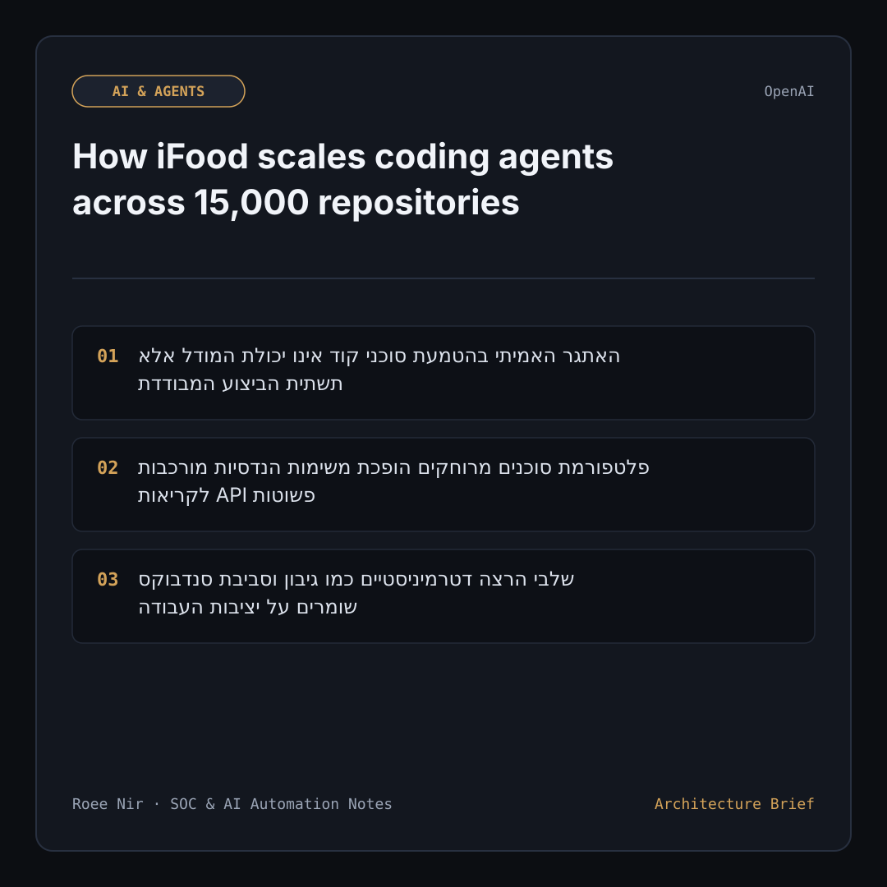

MANUAL PUBLISH PACK · Never auto-posted to LinkedIn without your click.
1. Visual Card (1080x1080)

2. פוסט מוכן + תגובה ראשונה
לפתור בעיית אבטחה או תאימות בקוד עבור מאגר יחיד זה פשוט, אבל האתגר האמיתי מתחיל כשצריך להריץ את זה על חמש עשרה אלף מאגרים שונים. בחברת iFood הבינו שמה שהיה חסר להם זו לא עוד אינטליגנציה או פרומפט מוצלח, אלא תשתית ביצוע ייעודית ומבודדת שמנהלת את כל מחזור החיים של הסוכן. הם בנו פלטפורמה שמקבלת בקשת REST API, מעבירה אותה לסביבת סנדבוקס מבודדת, ומחזירה חזרה Pull Request מוכן לבדיקה. בתכלס, עבור מפתחי אוטומציות ובונים של סוכני AI, התובנה פה היא קריטית: אל תנסו לשלב סוכנים פרועים ישר לתוך סביבת הייצור מבלי לבנות מעטפת דטרמיניסטית שמתחילה בשכפול הקוד ומסתיימת בבקשת מיזוג מבוקרת. הפרדת הרשויות הזו היא ההבדל בין פיילוט שנשאר במעבדה לבין אוטומציה ארגונית יציבה שרצה בסקייל. האם התשתיות שלכם מוכנות להריץ סוכני קוד באופן אוטומטי מבלי לסכן את יציבות המערכת? #AIAgents #DeveloperTools #Automation #SoftwareEngineering #CodeSecurity
תגובה ראשונה (לשמירה על חשיפה אורגנית):
לקריאת המחקר והפירוט הטכני המלא מתוך OpenAI: https://openai.com/business/customer-stories/ifood